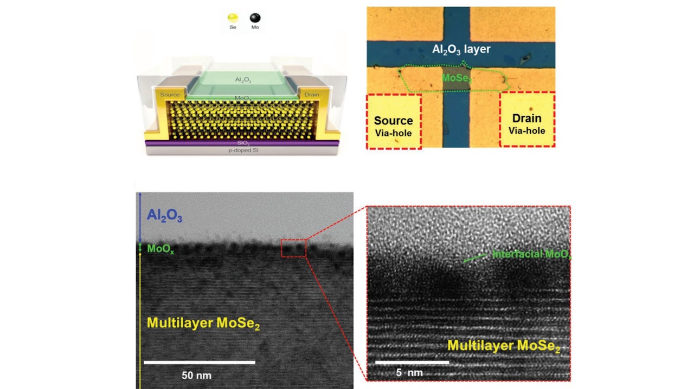
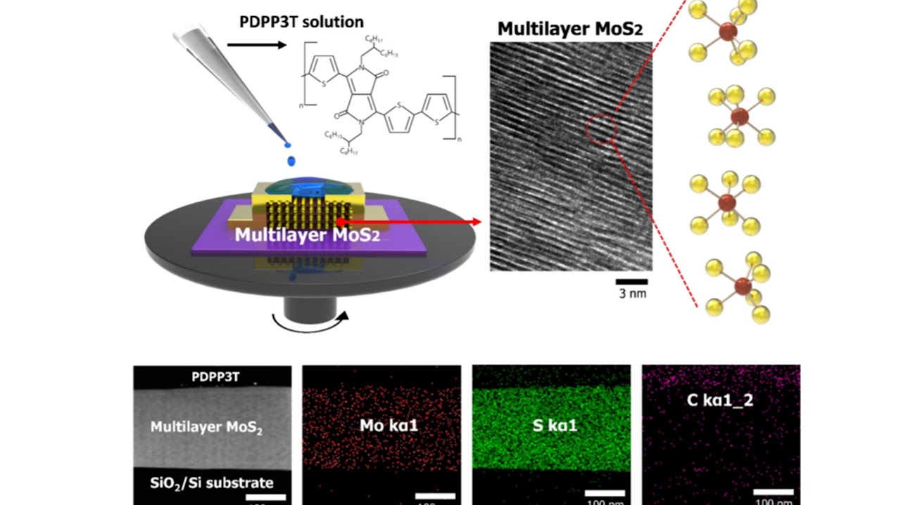
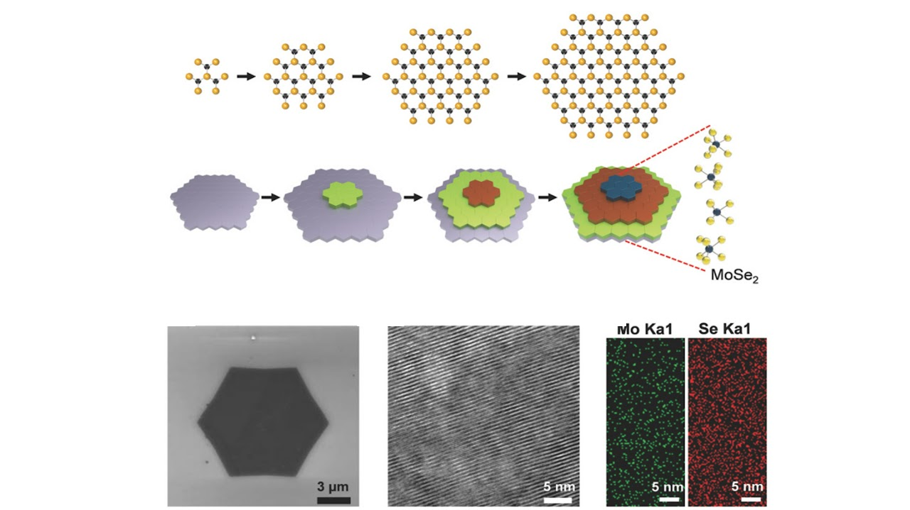
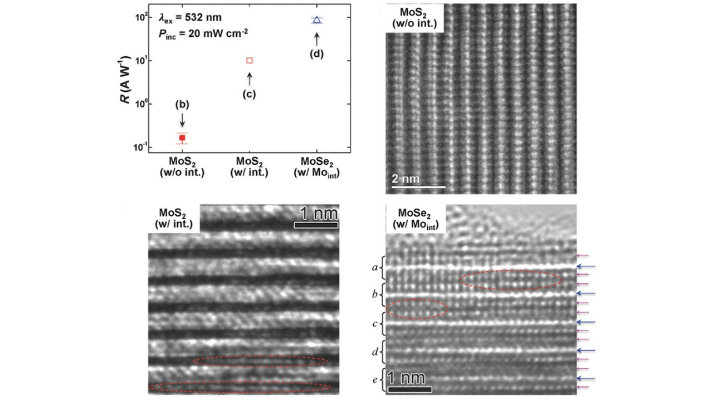

2018Before Gachon University
[13] n‐Type Doping Effect of CVD‐Grown Multilayer MoSe2 Thin Film Transistors by Two‐Step Functionalization, Advanced Electronic Materials, December (2018)
Seongin Hong, Haelin Im, Young Ki Hong, Na Liu, Sunkook Kim, Jun Hong Park

[12] Chemical Doping Effects in Multilayer MoS2 and Its Application in Complementary Inverter, ACS applied materials & interfaces, June (2018)
Hocheon Yoo, Seongin Hong (Co-1st), Sungmin On, Hyungju Ahn, Han-Koo Lee, Young Ki Hong, Sunkook Kim, Jae-Joon Kim

[11] Chemical Doping Effects on CVD‐Grown Multilayer MoSe2 Transistor, Advanced Electronic Materials, June (2018)
Hocheon Yoo, Seongin Hong, Hyunseong Moon, Sungmin On, Hyungju Ahn, Han‐Koo Lee, Sunkook Kim, Young Ki Hong, Jae‐Joon Kim

[10] Interstitial Mo‐Assisted Photovoltaic Effect in Multilayer MoSe2 Phototransistors, Advanced Materials, March (2018)
Sunkook Kim, Jesse Maassen, Jiyoul Lee, Seung Min Kim, Gyuchull Han, Junyeon Kwon, Seongin Hong, Jozeph Park, Na Liu, Yun Chang Park, Inturu Omkaram, Jong‐Soo Rhyee, Young Ki Hong, Youngki Yoon
